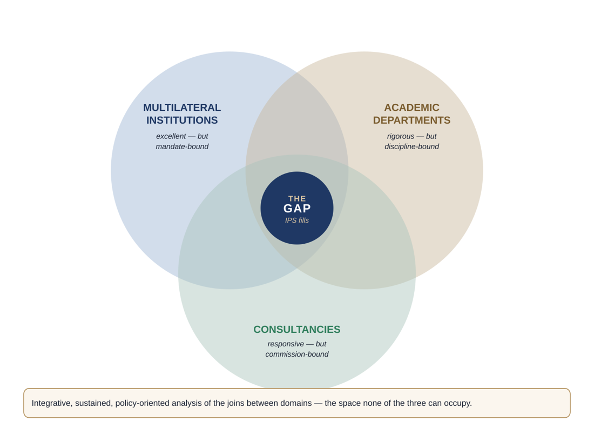

Independent policy institute · Geneva
Where structural determinants, public systems and societal outcomes meet.
The Institute for Public Systems is an independent, non-profit policy institute based in Geneva. We study how the structural conditions of a society pass through its public systems to become outcomes: health, economic resilience, social cohesion and institutional stability.
Our starting point
Health is the entry point. Public systems are the subject.
Population health cuts across every political, social and economic divide, and it can be measured. That makes it the clearest window onto how societies actually perform. The Institute begins there and works outward, to social protection, education, statistics, regulation and the digital infrastructure of the state.
Structural determinants and population outcomes
How income, education, housing, employment and environmental exposure, including air pollution, heat and water quality, shape population health, economic mobility and social cohesion.
Public systems governance
How the design of health, social protection, statistical and regulatory systems mediates structural conditions, and whether that design reduces inequalities or reinforces them.
Data, technology and public decision-making
How digital infrastructure and artificial intelligence can be brought into public governance responsibly, with attention to ethics, transparency and the public interest.
Why this Institute
Built for the joins between domains
Public policy is organised in silos. Income, education, work, housing, environment and digital access are usually treated one at a time, so sectoral reforms miss the conditions that decide whether they succeed.
Multilateral institutions are bound by their mandates, academic departments by their disciplines, and consultancies by what clients commission. The Institute is designed for the space those boundaries leave open: sustained, integrative analysis of how determinants and institutions together produce outcomes.

What we will produce
Five signature products
The Institute's work is anchored in five public outputs, developed on a sustained, multi-year cycle.
Flagship report
Refugee health and structural determinants in European public systems. The first report serves as the empirical proof of concept, anchored in data from Poland.
Structural Vulnerability Tracker
An open-access comparative dataset and dashboard on exposure to structural determinants, planned to cover more than 30 countries.
AI Governance Toolkit for Public Systems
A practical framework for bringing AI into public systems in the public interest, aligned with the European Health Data Space, the EU AI Act, the GDPR and the Data Governance Act.
Geneva Public Systems Dialogue
A quarterly hybrid seminar series for policymakers, academics and staff of multilateral organisations.
Geneva Forum on Public Systems
An annual convening on the structural determinants of public-system performance.
Flagship project
Climate-resilient primary health care in Bangladesh
The Institute's founding assembly designated a climate-resilient primary health care initiative in Bangladesh as its flagship project. The concept and partnerships are being developed with national counterparts, with a view to financing through the Green Climate Fund.
Founded 14 July 2026. The Institute was constituted by five founding members as a non-profit association under Articles 60 ff. of the Swiss Civil Code, with its seat in the Canton of Geneva.
Independence by design
Safeguards written into the statutes
Work with us
We welcome contact from academic, statistical, multilateral and civil-society bodies, and from funders who share a commitment to rigorous, public-interest analysis.